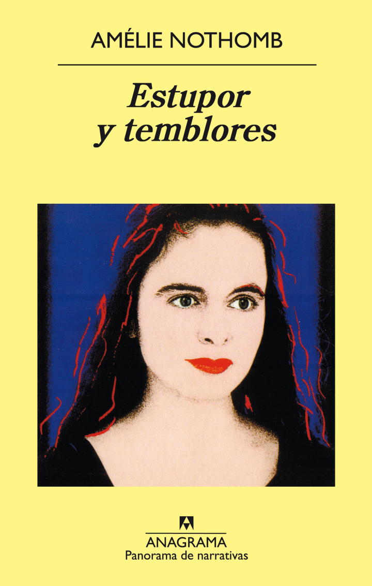
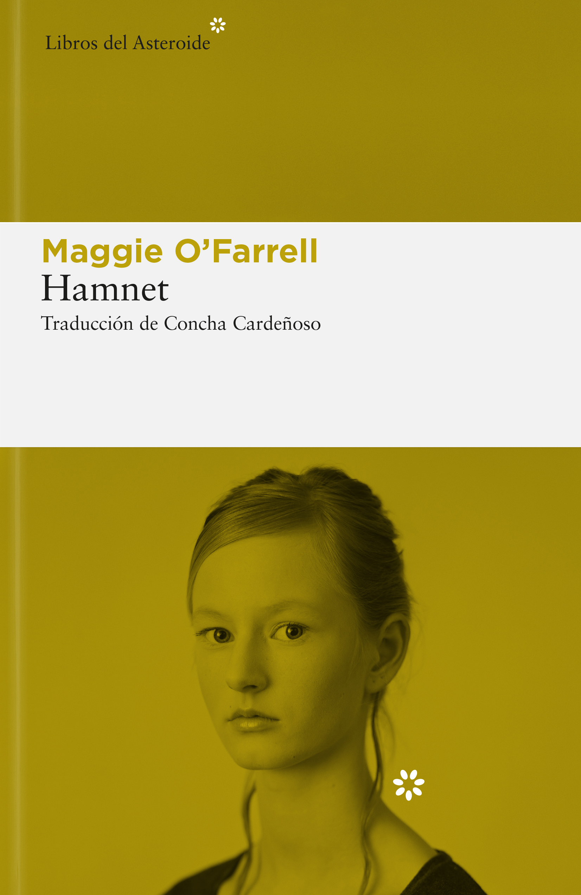

¡Hola y bienvenido a mi rincón de lectura! Si estás buscando tu próxima historia favorita, has llegado al lugar adecuado. Aquí no encontrarás críticas académicas ni spoilers, solo recomendaciones sinceras de libros que me han marcado, organizadas para que descubras exactamente la lectura que necesitas hoy. Ponte cómodo, echa un vistazo y déjate llevar por la magia de las buenas historias.
Esta conmovedora historia trata sobre sobre el amor, la maternidad, el arte y los hilos invisibles que conectan nuestras vidas a través del tiempo. La novela entrelaza dos historias ambientadas en Londres en dos épocas. Ambas líneas temporales forman un rompecabezas en el que se explora la maternidad desde una perspectiva honesta y nada idealizada.
| Datos del libro | |
|---|---|
| Título | La primera mano que sostuvo la mía |
| Autor | Maggie O'Farrell |
| Año de publicación | 2018 |
| Número de páginas | 380 páginas |
| ISBN-10 | 8417007377 |
| Página oficial del libro | Link |
¡Hola, lector! Bienvenido de nuevo al rincón. Hoy vengo a hablar de uno de esos libros que se quedan a vivir en la mesita de noche mucho tiempo después de haber cerrado la última página. Si todavía no has leído nada de Maggie O’Farrell, anota bien este título, porque lo que hace con las palabras en esta novela es magia pura.
La novela está construida como un elegante juego de espejos a través del tiempo en la ciudad de Londres. Por un lado tenemos los años 50: Lexie Sinclair decide romper con todo el corsé de la campiña inglesa y se muda al efervescente, bohemio y caótico Soho londinense. Es una mujer indomable, adelantada a su época, que se abre paso en el fotoperiodismo y vive un amor tan intenso como arriesgado. Por el otro, el Londres actual: Elina es una artista que acaba de dar a luz. Lo que debería ser el inicio de un momento idílico se convierte en una experiencia abrumadora y terrorífica, rozando el abismo emocional y físico. Su pareja, Ted, intenta sostener la frágil dinámica del hogar, pero empieza a ser asaltado por fragmentos borrosos de un pasado que creía sepultado. A simple vista parecen historias que no tienen nada que ver, pero O’Farrell va tejiendo los hilos con una precisión milimétrica hasta que, ¡pum!, todo encaja de una manera que te deja con la boca abierta.
Para los amantes de las historias con personajes femeninos fuertes, complejos y profundamente humanos, que disfrutan de una prosa rica, sensorial y poética, que a la vez tiene un ritmo de misterio emocional que te atrapa. Y también para cualquier lector que crea en los lazos invisibles del destino y en cómo un solo instante puede marcar el rumbo de toda una vida.
Es un libro conmovedor, inteligente y que duele bonito. Te deja pensando en las manos que nos sostuvieron al nacer, en las que nos sostienen hoy y en cómo la memoria familiar viaja a través del tiempo de formas insospechadas.
¿Y tú? ¿Ya leíste algo de Maggie O’Farrell o este va directo a tu lista de pendientes?
Aquí puedes ver una selección de los títulos que próximamente encontrarán un hueco en mi estantería
Una belleza terrible

Estupor y temblores

Hamnet